|
|
|
☆凪良氏描下ろし同人誌[S.E.C Version0]
を５名様にプレゼント！
応募期間：2007年1月26日〜1月30日まで
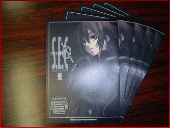
入手困難なレア同人誌を大プレゼント！
「アルトネリコ」発売前の凪良氏を知る貴重な一冊です。

キャラクターデザインを担当。艶やかな塗りと、きめ細かな設定に
よって描かれたキャラは、大勢のアルトネリコファンを生み出した。
[S.E.C] http://sec.or.tv/
|
|
|
|
|
|
|
|
|
|
☆志方あきこ氏厳選「おたのしみに福袋」セット！
を５名様にプレゼント！
応募期間：2007年2月9日〜2月13日まで
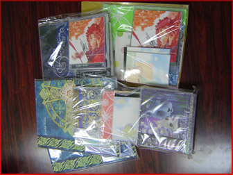
志方あきこ氏が厳選した関連グッズの「お楽しみ福袋」セット
中には市場にはすでにないレアモノや画像をみるとニューアルバム『Kalliope 〜Piano Concert〜』も入っているぞ！どの福袋が届くから着いてからのお楽しみ！
アルトネリコオープニングテーマ「謳う丘」の他に志方あきこ氏作曲の楽曲もアルトネリコゲーム本編に収録。
▼志方あきこ氏収録楽曲▼
・謳う丘-Harmonics EOLIA-
・EXEC_CHRONICLE_KEY/.
・EXEC_PAJA/.#Misya extracting
・EXEC_HARMONIUS/.
・星詠〜ホシヨミ〜
・EXEC_PHANTASMAGORIA/.
[VAGRANCY] http://www.vagrancy.jp/

| Kalliope 〜Piano Concert〜(カリオペ 〜ピアノ・コンサート〜) |
| 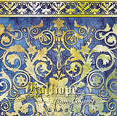 |
◆発売日：2007年1月7日
◆ＣＤ内容
ピアノスコア「Kalliope-カリオペ-」の全15曲を表情豊かなピアノ演奏でお届けします。(1枚組CD)
◆お買い求めはこちら◆ |
|
|
|
|
|
|
|
☆霜月はるか氏直筆サイン入り！
Maple Leaf 5th anniversary CD「Maple Leaf BOX」を５名様にプレゼント！
応募期間：2007年2月16日〜2月20日まで
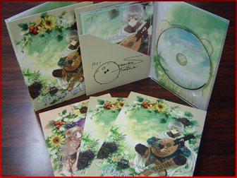
Maple Leafとしての同人活動５周年を記念したアルバムに本人直筆サイン入りのレアプレゼント！MapleLeaf名義の過去の廃盤になったCDの楽曲や他企画への提供楽曲の再収録、さらに新曲を加えて１枚のアルバムにまとめてあるので新旧ファンの方必聴の一枚！
※発送されるのは第二版です。
その透き通るようなボーカルを披露した他、本人作曲の楽曲もゲーム本編に収録。
▼霜月はるか氏収録楽曲▼
・EXEC_LINCA/.
・EXEC_PAJA/.#Orica extracting
・EXEC_RE=NATION/.
・月奏〜ツキカナデ〜
・EXEC_PHANTASMAGORIA/.

[Maple Leaf] http://shimotsukin.com/
| ティンダーリアの種 |
| 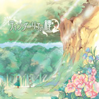 |
◆発売日：2007年2月28日
◆価 格：¥3,150（税込）
◆品 番：KDSD-00222
◆ＣＤ内容
CDのために編み上げられた世界観と物語。それを伝えるのは、民族音楽やクラシックの要素を含んだ、ゲーム音楽や映画音楽を思わせる楽曲陣。独特の浮遊感を持ったコーラスワークも世界を作り上げてゆきます。
◆詳しくはこちら◆ |
|
|
|
|
|
|
|
|
☆みとせのりこ氏のソロとキルシェのCD二枚の他に、みとせのりこ氏が好きで長年集めた貴重な品を
５名様にプレゼント！
応募期間：2007年2月23日〜2月27日まで
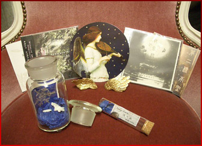
ソロとキルシェの２枚のＣＤの他に本人が好きで集めた品を
大プレゼント！
★プレゼント一覧★
01：ヨルオトヒョウホン（みとせのりこソロアルバム・初回特典付）1枚
02：Schwarz Nacht（キルシェマキシシングル・初回特典付）1枚
03：煙水晶（鉱石・管瓶に入れてお届け） 1つ
04：金の羽のカードスタンド（カードつき）両翼
05：アンティークの広口試薬瓶（雪の結晶釦入り）1個
アルトネリコのゲーム中に流れる楽曲にてボーカルを担当。美しく心の奥底まで響きわたるボーカルは必聴です。
▼みとせのりこ氏収録楽曲▼
・EXEC_SUSPEND/.
・EXEC_RIG=VEDA/.
・EXEC_PHANTASMAGORIA/.
[みとせの部屋〜SnowBlanc〜]
http://www.snowblanc.net/
| みとせのりこ氏ご本人から新譜情報のコメント頂きました。 |
| 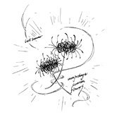 |
みとせのりこは一昨年から続けてきた唱歌ライヴでのアレンジをベースにした「唱歌アルバム」の制作中です
（画像は唱歌ライヴのパンフから）。
アイリッシュハープとアコーディオンという北欧トラッドな楽器と古きよき美しい日本語はとても美しく調和する、まるでずっと逢えずにいた兄弟姉妹のように。
実は日本の唱歌とアイリッシュドラッドは似たところがたくさんあります。古いものというのはそれがどんなに離れた国のものでもどこかに共通したノスタルジアがあるのでしょう。春頃お聴かせできる予定で制作に勤しんでいますので、楽しみにしていて下さい。 |
|
|
|
|
|
|
|
|
|
|
|
|
☆アルトネリコのプロデューサーを務めた河内氏よりWii専用ソフト「クレヨンしんちゃん 最強家族カスカベキング うぃ〜」と、
なんと！今回、バンプレスト様よりプレゼントが緊急追加されました！
ニンテンドーDS専用ソフト「クレヨンしんちゃん 嵐を呼ぶ ぬってクレヨ〜ン大作戦」しかも早期購入者特典「コスプレしんちゃん ヘチマ型クリーナーも付き！」を
各５名様にプレゼント！
※プレゼント応募の際、どちらかを選択してください。
応募期間：2007年3月16日〜3月20日まで
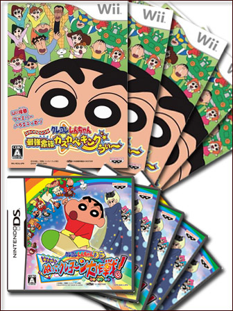
アルトネリコと関係ないじゃないかと思いの方！なんとこのソフトは「アルトネリコ」プロデューサー河内氏が関わっているソフトなのだ！ということで頂いてきました！
★プレゼントソフトの詳しい内容はこちらから★
[クレヨンしんちゃん ゲームポータルサイト]
http://www.banpresto-game.com/game-shinchan/
プロデューサーとしてアルトネリコ完成までその手腕をいかんなく発揮してきた方。
|
|
|
|
|
|
|
|
☆ガストからは、星詠〜ホシヨミ〜と月奏〜ツキカナデ〜をガストショップで同時購入すると購入特典してもらえた「ヒュムノケース」＋星詠〜ホシヨミ〜と月奏〜ツキカナデ〜も付けて５名様にプレゼント！
応募期間：2007年3月23日〜3月27日まで
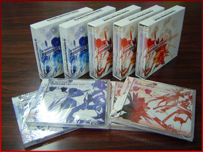
ガストショップスタッフ：
「マジッスか？ヒュムノケースプレゼントですか？もうサンプルしかないですよ！」という言葉も届かず…土屋ディレクターに逆らえないガストショップスタッフでした…本当にこれが最後で最後の「ヒュムノケース」です！どんどんご応募ください！
|
|
|
|
|
|
|
☆土屋ディレクターからはあの伝説的購入特典「ヒュムノート」を出血大サービスで５名様にプレゼント！
応募期間：2007年3月30日〜4月3日まで
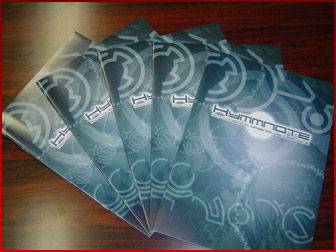
ガストショップスタッフ:
「マジッスか？ヒュムノートもプレゼントですか？社内サンプルすらもないですよ！」という言葉も届かず…全国津々浦々探して探して５冊ゲットしてきました！本当にこれで見納めです！ヒュムノケース共々どんどんご応募ください！
ディレクターを担当。世界設定から楽曲製作まで、アルトネリコの“神”であると同時に、ガストスタッフはその異常なまでの仕事量をこなす土屋ディレクターを宇宙人と呼んでいる。
|
|
|
|
|
|
|
|
 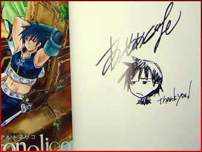
あやめぐむ氏、直筆サイン入り「Ar tonelico-arppegio」
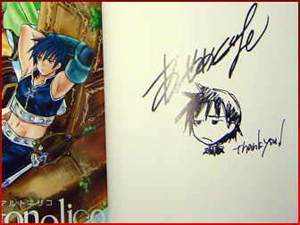
あやめぐむ氏、直筆サイン入り「Ar tonelico-arppegio」